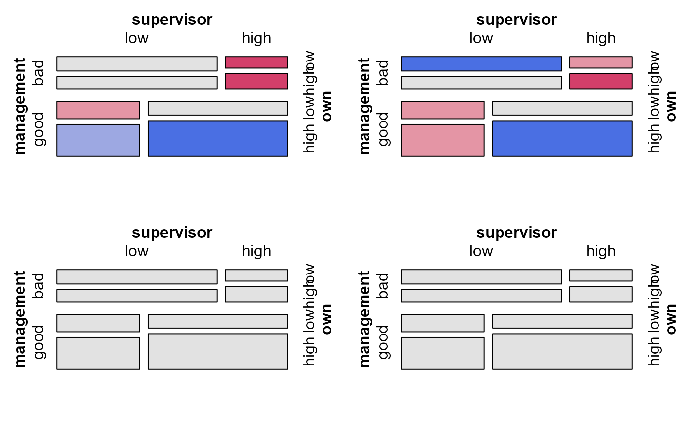
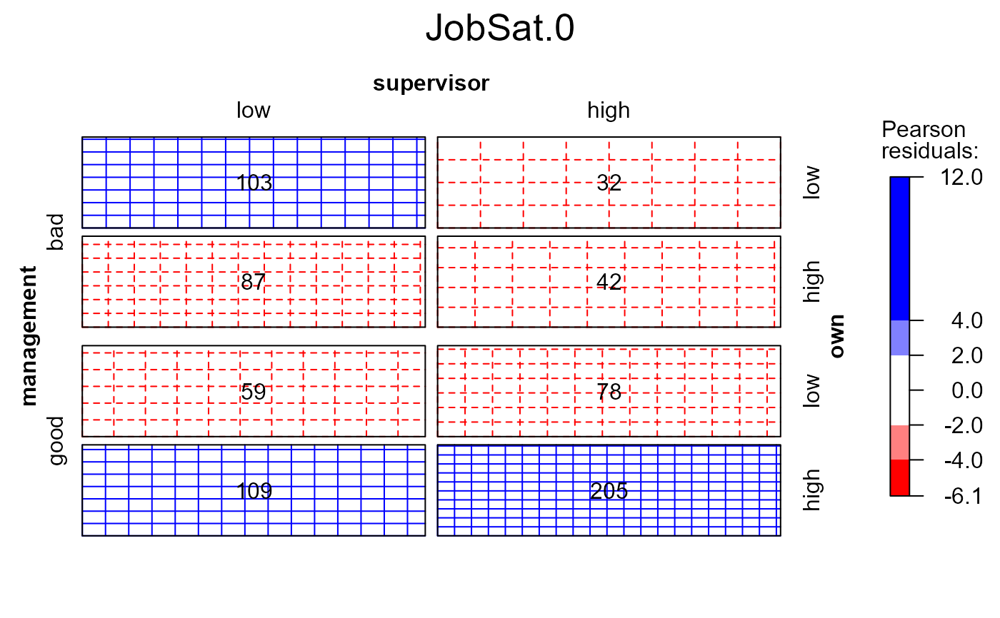
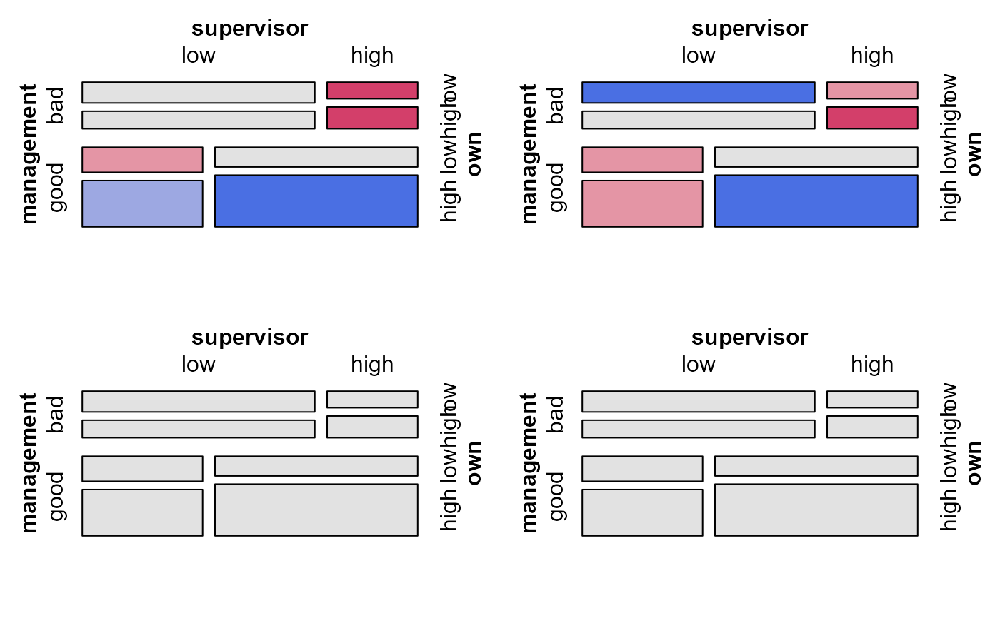
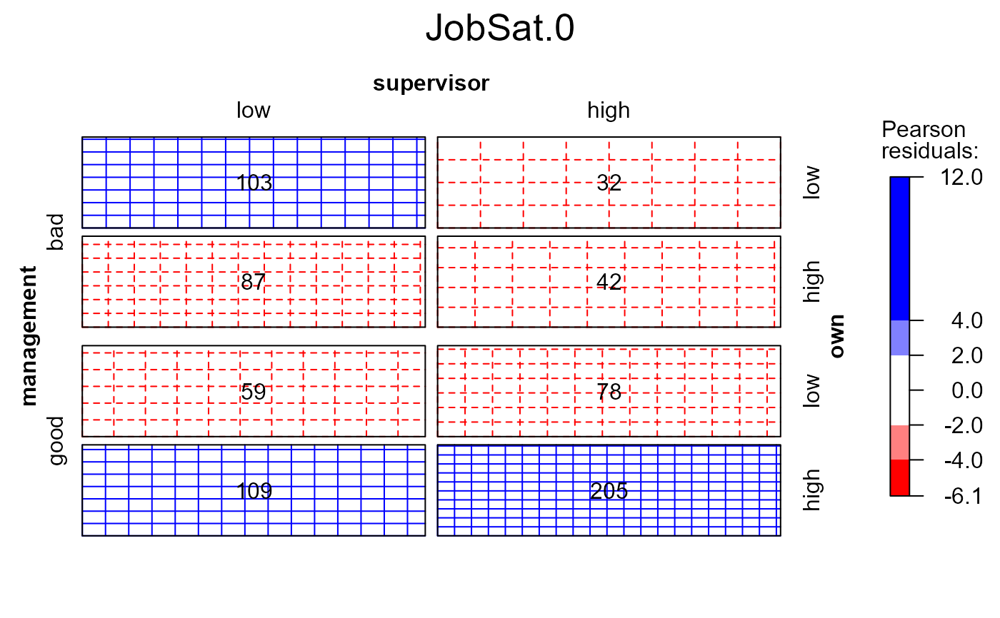

This function provides a convenient interface for viewing mosaic displays
associated with a collection of glm models for frequency tables that have
been stored in a glmlist or loglmlist object. You can plot
either selected models individually, or mosaics for all models in an array
of viewports.
Usage
# S3 method for class 'glmlist'
mosaic(
x,
selection,
panel = mosaic,
type = c("observed", "expected"),
legend = ask | !missing(selection),
main = NULL,
ask = TRUE,
graphics = TRUE,
rows,
cols,
newpage = TRUE,
...
)
# S3 method for class 'loglmlist'
mosaic(
x,
selection,
panel = mosaic,
type = c("observed", "expected"),
legend = ask | !missing(selection),
main = NULL,
ask = TRUE,
graphics = TRUE,
rows,
cols,
newpage = TRUE,
...
)Arguments
- x
a
glmlistorloglmlistobject- selection
the index or name of one
glmorloglmobject inx. If no selection is specified, a menu of models is presented or all models are plotted.- panel
- type
a character string indicating whether the
"observed"or the"expected"values of the table should be visualized- legend
logical: show a legend for residuals in the mosaic display(s)? The default behavior is to include a legend when only a single plot is shown, i.e., if
askisTRUEor aselectionhas been specified.- main
either a logical, or a vector of character strings used for plotting the main title. If main is a logical and
TRUE, the name of the selected glm object is used.- ask
logical: should the function display a menu of models, when one is not specified in
selection? Ifselectionis not supplied andaskisTRUE(the default), a menu of model names is presented; ifaskisFALSE, mosaics for all models are plotted in an array.- graphics
logical: use a graphic dialog box when
ask=TRUE?- rows, cols
when
ask=FALSE, the number of rows and columns in which to plot the mosaics.- newpage
start a new page? (only applies to
ask=FALSE)- ...
other arguments passed to
mosaic.glmand ultimately tomosaic.
Value
Returns the result of mosaic.glm.
Details
Most details of the plots produced can be controlled via ... arguments
as shown in some of the examples below. In particular, with
panel=sieve you need to also pass gp=shading_Friendly to get a
color version.
References
David Meyer, Achim Zeileis, and Kurt Hornik (2006). The
Strucplot Framework: Visualizing Multi-Way Contingency Tables with vcd.
Journal of Statistical Software, 17(3), 1-48.
https://www.jstatsoft.org/v17/i03/,
available as vignette("strucplot", package="vcd").
See also
mosaic.glm, mosaic,
strucplot, for the many parameters that control the
details of mosaic plots.
Other mosaic plots:
mosaic.glm(),
mosaic3d()
Examples
data(JobSatisfaction, package="vcd")
# view all pairwise mosaics
pairs(xtabs(Freq~management+supervisor+own, data=JobSatisfaction),
shade=TRUE, diag_panel=pairs_diagonal_mosaic)
modSat <- Kway(Freq ~ management+supervisor+own, data=JobSatisfaction,
family=poisson, prefix="JobSat")
names(modSat)
#> [1] "JobSat.0" "JobSat.1" "JobSat.2" "JobSat.3"
if (FALSE) { # \dontrun{
mosaic(modSat) # uses menu, if interactive()
} # }
mosaic(modSat, "JobSat.1") # model label
#> Warning: no formula provided, assuming ~management + supervisor + own
mosaic(modSat, 2) # model index
#> Warning: no formula provided, assuming ~management + supervisor + own
 # supply a formula to determine the order of variables in the mosaic
mosaic(modSat, 2, formula=~own+supervisor+management)
mosaic(modSat, ask=FALSE) # uses viewports
#> Warning: no formula provided, assuming ~management + supervisor + own
#> Warning: no formula provided, assuming ~management + supervisor + own
#> Warning: no formula provided, assuming ~management + supervisor + own
#> Warning: no formula provided, assuming ~management + supervisor + own

# use a different panel function, label the observed valued in the cells
mosaic(modSat, 1, main=TRUE, panel=sieve, gp=shading_Friendly, labeling=labeling_values)
#> Warning: no formula provided, assuming ~management + supervisor + own

data(Mental)
indep <- glm(Freq ~ mental+ses,
family = poisson, data = Mental)
Cscore <- as.numeric(Mental$ses)
Rscore <- as.numeric(Mental$mental)
coleff <- glm(Freq ~ mental + ses + Rscore:ses,
family = poisson, data = Mental)
roweff <- glm(Freq ~ mental + ses + mental:Cscore,
family = poisson, data = Mental)
linlin <- glm(Freq ~ mental + ses + Rscore:Cscore,
family = poisson, data = Mental)
# assign names for the plot labels
modMental <- glmlist(Indep=indep, ColEff=coleff, RowEff=roweff, `Lin x Lin`=linlin)
mosaic(modMental, ask=FALSE, margins=c(3,1,1,2), labeling_args=list(abbreviate_labs=5))
#> Warning: no formula provided, assuming ~ses + mental
#> Warning: no formula provided, assuming ~ses + mental
#> Warning: no formula provided, assuming ~ses + mental
#> Warning: no formula provided, assuming ~ses + mental
# supply a formula to determine the order of variables in the mosaic
mosaic(modSat, 2, formula=~own+supervisor+management)
mosaic(modSat, ask=FALSE) # uses viewports
#> Warning: no formula provided, assuming ~management + supervisor + own
#> Warning: no formula provided, assuming ~management + supervisor + own
#> Warning: no formula provided, assuming ~management + supervisor + own
#> Warning: no formula provided, assuming ~management + supervisor + own

# use a different panel function, label the observed valued in the cells
mosaic(modSat, 1, main=TRUE, panel=sieve, gp=shading_Friendly, labeling=labeling_values)
#> Warning: no formula provided, assuming ~management + supervisor + own

data(Mental)
indep <- glm(Freq ~ mental+ses,
family = poisson, data = Mental)
Cscore <- as.numeric(Mental$ses)
Rscore <- as.numeric(Mental$mental)
coleff <- glm(Freq ~ mental + ses + Rscore:ses,
family = poisson, data = Mental)
roweff <- glm(Freq ~ mental + ses + mental:Cscore,
family = poisson, data = Mental)
linlin <- glm(Freq ~ mental + ses + Rscore:Cscore,
family = poisson, data = Mental)
# assign names for the plot labels
modMental <- glmlist(Indep=indep, ColEff=coleff, RowEff=roweff, `Lin x Lin`=linlin)
mosaic(modMental, ask=FALSE, margins=c(3,1,1,2), labeling_args=list(abbreviate_labs=5))
#> Warning: no formula provided, assuming ~ses + mental
#> Warning: no formula provided, assuming ~ses + mental
#> Warning: no formula provided, assuming ~ses + mental
#> Warning: no formula provided, assuming ~ses + mental